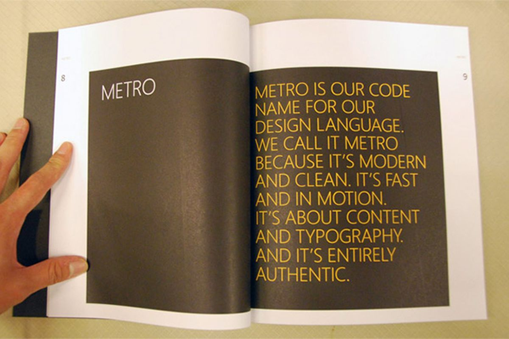
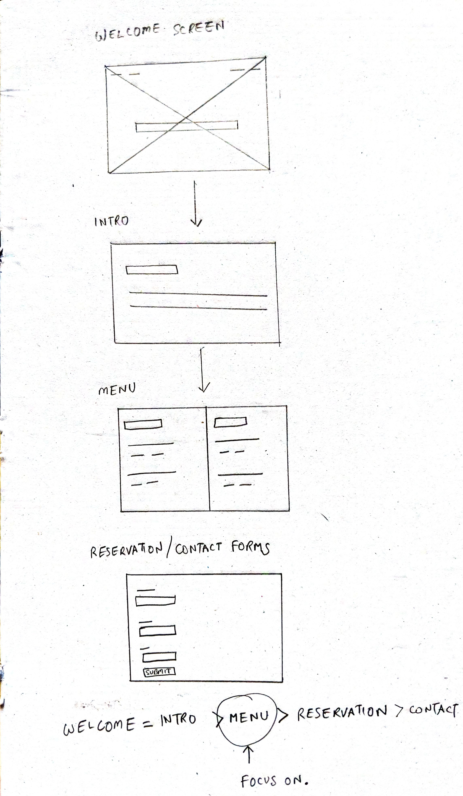

Design and create a single page website for a restaurant. This final assignment was a test of all UX and web-coding skills acquired in CSCI 1170.
2 weeks
Present a single-page responsive website that has two contact forms and a sticky nav-bar for desktop users.
My course required me to design and create a website for a restaurant. This was the project to be handed in at the end of the semester, incorporating all the UX skills and HTML5/CSS3/Javascript skills picked up in the course.
I chose a hypothetical high-society restaurant called 'The 9th Circle'. The website features smooth animations, responsive design, a sticky header on desktops for easy navigation. The layout was chosen after considering user-centric design principles.
Since this was a hypothetical restaurant, specifics of sale, customer base and similar data did not exist. It was up to me to come up with some data to help me apply some of the design thinking principles into my workflow.
I interviewed Abdullah to get a sense of what he looks for in a restaurant. I asked him about his booking experiences, and what he likes and dislikes seeing. After the interview, I found out he is a fan of Middle Eastern cuisine, likes to eat on a budget if possible, and goes out in groups. Important points I learnt about him are:
PAIN POINTS
+ Dislikes food that is not freshly prepared.
+ Dislikes going to food places alone.
+ Finds long wait times frustrating.
I asked Jacob what his major pain points were when it came to booking a table at a restaurant. He offered me some insights into what he likes and dislikes. As a regular at pubs, grills, and sports bars, Jacob's opinions will help me get a pulse on the urban crowd.
PAIN POINTS
+ Notes that many places that have an inconsistent visual experience compared to the cuisine they serve.
+ Finds defunct mechanisms for booking annoying.
+ Dislikes isolated experiences.
I asked Aari how her accessibility needs influence her interactions with online booking systems. She mentions that a serious color palette often intimidates people such as herself or people with similar disabilities. She mentions that she has seen restaurants where the systems in place were able-ist in nature and this extended to their online presence as well, making reserving a table a daunting experience.
PAIN POINTS
+ Finds overly serious places intimidating.
+ Dislikes places with no accessibility features.
Zacary, 30, is an office-goer who frequents the busier part of town. He has accesibility needs that make a lot of places and systems ineligible for his use. He likes the color green, superheroes, and watching Netflix. He has seen a new restaurant pop up on his way to work and wants to know more about it- what kind of food it serves and who the chefs are. He may even book a table for dinner if he finds the restaurant to his liking.
HABITS
+ Reading comic books.
+ Watching crime documentaries.
+ Participating in local carnivals and festivals.
Elise is 23. She is a food critic/blogger. She runs her own YouTube channel and Instagram page. She wants to explore the latest culinary experience that has risen up in the 'happening' part of the city. She wants to book a table, and perhaps even contact the owners about vlogging inside the premises and sharing it with her millions of followers.
HABITS
+ Using social media.
+ Ordering in food from delivery apps.
+ Attending local conventions.
Joseph turned 50 recently. He is a husband and busy father who is quite occupied at dinner time. He rarely goes out to eat. He lives with his family in the outskirts of the city. He owns a stable, and likes to garden in his spare time. He does not care much for big-name chefs or long waiting lines in restaurants. Like Zacary, he also holds a rather grueling full-time job to support his family.
HABITS
+ Taking care of his plants.
+ Riding horses.
+ Competing in local agricultural competitions.
After analyzing my users, I drew up these sets of questions to better frame the solution to my task.
+ How might we focus on speed first?
+ How might we acknowledge that the place is 'local'?
+ How might we entice non-foodies to try this restaurant?
+ A fancy restaurant in a metro-city location will attract a lot of office-goers.
+ "9 to 5" hours in big cities are quite stretched, leaving much of the people with little personal time.
+ Being described as "fancy, but utilitarian in cuisine", the restaurant needs to strike a balance between form and function.
+ The overworked people of large cities go for a night out to get some amount of relaxation.
+ The dinner would then be more about having a relaxing experience than just about food.
+ "Reserving" a table is work. Looking at a menu and pictures of food is not.
After identifying who my users might be, I realized my users would expect the website to give them the information they were looking for fast. They would want the content they were looking for with minimal distractions, visual clutter or annoying popups. As people who value their time, they would appreciate efficiency over visual finesse, content over chrome. Ad people who enjoy all things 'local', a menu split between Regulars and Specials may create a sense that it is a local establishment similar to diners. A specials menu that is dynamic may also entice people who usually do not frequent restaurants to check out what the menu is on that specific day, leading to a better chance of purchase.
I pursued a design which pushes the content front and center. The visual elements take a backseat to the content itself. I took inspiration from Microsoft's Metro Design, employed widely in its 2012 range of products and software suites. The UI focuses on typography, with large, bold fonts. I've emphasized the content over flair, similar to Metro design principles. In my design, I wanted to make the information pop out. The user sees exactly what they wanted to see, and nothing more.
+ A focus on speed and efficiency.
+ A focus on large fonts and clear text.
+ De-emphasizing cliched visuals commonly associated with restaurant websites that slow down the process of booking.
After analyzing my users, I came to certain conclusions about what features to include in this website. These are standard features available at any restaurant website. Yet, this website has no additional bloated features to complicate the simple experience of viewing the menu or reserving a table. This has been done taking the user into consideration.
+ A welcome screen.
+ A brief introduction to the restaurant.
+ The menu itself.
+ A reservation form.
+ A contact section.
Part of my work process involves prioritizing functions based on user needs to design a layout. More users would want to see the menu and know a bit about the restaurant, compared to the few who would want to contact the owners. The 'Menu' and 'About' sections get assigned a higher priority. In designing the website, I created a hierarchy, with the most important elements getting the most visibility and focus through larger fonts, whitespaces, or colored backgrounds.
A section has been dedicated to reserving a seat at the restaurant. However, research from the Scientific American [ Jabr, F. (2013) 'The Reading Brain in the Digital Age: The Science of Paper versus Screens' ] has led me to conclude that the tactility of a clickable button for a major action has a reserved importance in today's users. This is why I've opted to make the reservation function accessible by a highly visible, clickable button.
WELCOME = INTRO > MENU > RESERVATION > CONTACT
This is what my initial design of the individual elements looked like. Prioritizing the elements made it clear to me what i should focus on and what elements can be tucked away behind clickables for visual clarity. This was my hierarchy so far:
When I looked at competing restaurants, I found that too many websites rely on long, drawn out animations. This make the webpages slow to load, and a pain to navigate. An emphasize on typography and information over animations inverts the trope of a restaurant's website being "artistic" and makes it a functional tool in the restaurant's business operation.
In essence, going light on the animations creates a quick-loading website. Prioritizing information over artistry means the website lets the user quickly get to the content they are looking for. Altogether, this creates a quick, efficient and relaxing experience for the user, better capturing that elusive perfect mood.
Before I reached the final design, experimenting with a variety of color combinations took me a few days. Iterations later, Adobe Color had helped me find combinations of color that go well with each other and play off the images well. Given more time, I'd make two prototypes- one in greyscale and the other in color. The greyscale version would serve as a good control for the final design.
Some of the background images or elements may appear slightly distorted due to panoramic capture.
Some of the background images or elements may appear slightly distorted due to panoramic capture.
Some of the background images or elements may appear slightly distorted due to panoramic capture.
Creating this website, I had been plagued by a few problems. I had only two weeks to not only design but also code the webpage. In development, I was not permitted to use Bootstrap, or any framework for responsive design- everything was to be hand-coded with simple media queries.
So what could've gone better? Well, if I had more time to hand in the project, I would:
+ I would add an autoplaying carousel to switch between Regular and Special menus, instead of having a clickable button.
+ I would adjust the spacing of some of the elements to make alignment more consistent across all devices.
+ Most importantly, in a real world design situation, I would be delivering high fidelity prototypes instead of coding the website by hand. Hence, the implementation would be achieved in a better manner.